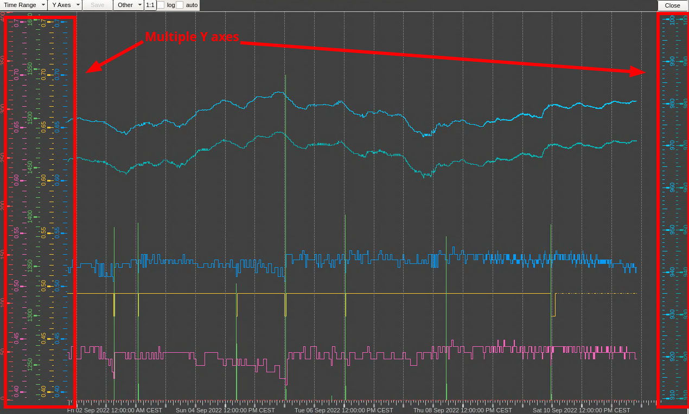
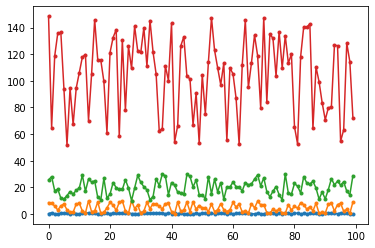
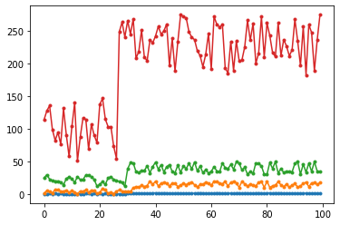
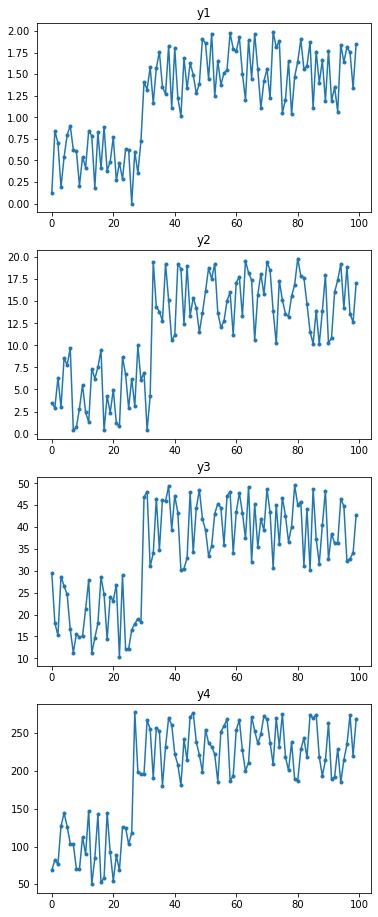
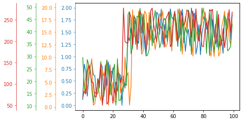
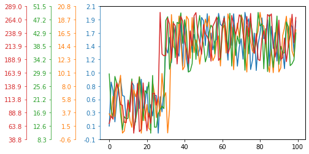

When working with gas systems I make intense use of the WinCC-OA trending tool, which allows to plot up to 8 time series on the same panel. Each time series tpyically corresponds to the value read by a sensor of a plant so it may have different units and range. The trending tool allows to have multiple Y axes on the left side which can be adjusted in terms of range and offset.
I find this feature particularly helpful, especially when there is the need to quickly and explore and correlate readings of sensor from different parts of the plant

WinCC-OA/UNICOS trending tool
Tools like matplotlib and plotly make it easy to work with multiple series plotted on the same data but I found a bit cumbersome trying to visualize data having different scales on the same plot.
The problem of visualizing many series
Assuming we have a very simple set of \((x, y_n)\) series a simple plot with matplotlib may look like this:
import matplotlib.pyplot as pltimport random as rndx =range(100)y1 = [rnd.random() for i in x]y2 = [rnd.random() *10for i in x]y3 = [rnd.random() *20+10for i in x]y4 = [rnd.random() *100+50for i in x]fig, ax = plt.subplots()for y in [y1, y2, y3, y4]: ax.plot(x, y, '.-')

Figure 1: A matplotlib plot with four series plotted together.
Note that in Figure Figure 1 each time series has a different standard deviation, thus different ranges may be needed. This is often easily accomplished by plotting each series in a different subplots. However, subplots make it more difficult to visually compare and align series, especially when time-based. For example, see subplots here:
x =range(100)y1 = [rnd.random() if i <30else rnd.random() +1for i in x]y2 = [rnd.random() *10if i <33else rnd.random() *10+10for i in x]y3 = [rnd.random() *20+10if i <30else rnd.random() *20+30for i in x]y4 = [rnd.random() *100+50if i <27else rnd.random() *100+180for i in x]fig, ax = plt.subplots()for y in [y1, y2, y3, y4]: ax.plot(x, y, '.-')

Multiple series with an offset at arbitrary x.
Here I have added an offset to each series. Two series, y1 and y3 have a change point at the same index, while the other two have a change point at slightly different xs. We could plot each series in a subplots, perhaps vertically stacked:
series = [y1, y2, y3, y4]fig, axs = plt.subplots(len(series), 1, figsize=(6, 4*len(series)))for ix, y inenumerate(series): ax = axs.flat[ix] ax.plot(x, y, '.-') ax.set_title(f'y{ix+1}')

Figure 2: Series plotted on different subplots.
In figure Figure 2 you can see that each series as an offset when adding a proper range on the y axis. However, it is still a bit difficult to understand the real indexes of the offset. I would like to understand which come first and which comes later.
Adding multiple Y axes to matplotlib plots
We can starting adding multiple axes by taking inspiration from the Matplotib documentation using spines, Parasite Axes and another Parasite axis demo.
The idea is to use ax.twinx() to create an additional axes. As the documentation says, > Create a new Axes with an invisible x-axis and an independent y-axis positioned opposite to the original one (i.e. at right).
Although twinx() is used to create a secondary axis on the right position I could use it to create a secondary axis and leave the spines of the axis only on the left. I can use set_position() on the spines object to shift the spines on left:
Figure 3: Single plot with multiple series and secondary axes.
As you can see in Figure Figure 3 we can understand the index at which each change point of the series is happening. The only issue is that the y axes on the right are overlapping between each other.
My goal is to have these secondary y-axes on the left for easier reading. Actually, if you inspect the source of how twinx() is defined, it calls Axes._make_twin_axes() and sets later the tick position on the right using YAxis.tick_right() and YAxis.set_label_position('right'). It would be nice if twinx() would not assume that we want the axes to the right and instead allowed to pass a parameter which decised the position.
Here below I leave a minimum working example I could think of:
fig, axes = plt.subplots()for ix, y inenumerate(series):# If we have to plot the first series we use # The axes created by plt.subplots() earlierif ix ==0: ax = axeselse:# It's not the first series: we need to# create a twin axes ax = axes.twinx()# Set the ticks of the axis to the left ax.yaxis.tick_left()# Set the labels of the axes to the lef ax.yaxis.set_label_position('left') ax.yaxis.set_offset_position('left')# Offset the position of he ticks and labels# by some % of the axes avoid overlapping of axes ax.spines['left'].set_position(('outward', 40* ix))# Plot the actual data ax.plot(x, y, color=f'C{ix}') ax.spines['left'].set_color(f'C{ix}') ax.tick_params(axis='y', colors=f'C{ix}')

Et voilà, here I have a plot similar to the WinCC-OA one. I could improve the plot a bit by using the same number of ticks for each axes. I would do this using the LinearLocator class:
Code
import matplotlib.ticker as mtfig, axes = plt.subplots()for ix, y inenumerate(series):# If we have to plot the first series we use # The axes created by plt.subplots() earlierif ix ==0: ax = axeselse:# It's not the first series: we need to# create a twin axes ax = axes.twinx()# Set the ticks of the axis to the left ax.yaxis.tick_left()# Set the labels of the axes to the left ax.yaxis.set_label_position('left') ax.yaxis.set_offset_position('left')# Offset the position of he ticks and labels# by some % of the axes avoid overlapping of axes ax.spines['left'].set_position(('outward', 40* ix))# Plot the actual data ax.plot(x, y, color=f'C{ix}')# Set the colors of the ticks, labels and spines to be# the same of the associated series ax.spines['left'].set_color(f'C{ix}') ax.tick_params(axis='y', colors=f'C{ix}')# Use a tick locator to have the same number of ticks ax.yaxis.set_major_locator(mt.LinearLocator(11))# And format the labels to have only one digit after the decimals ax.yaxis.set_major_formatter(mt.StrMethodFormatter('{x:.1f}'))

Conclusions
I find very useful for myself to provide a minimal example of having a plot with multiple axes, though a final plot may require more subtle adjustements. Keypoints to have multiple y axes:
Use twinx() to create an additional axis
Set ticks, labels and offest positions to the right: ax.yaxis.tick_left(), ax.yaxis.set_label_position('left'), ax.yaxis.set_offset_position('left')
Adjust the offset of the spines to the left using points, percentage or data coordinate. In the case of points: ax.spines['left'].set_position()
Change spines, tick and label colors to the same of the series for better readability: ax.spines['left'].set_color(color), ax.tick_params(axis='y', colors=color)
Optionally adjust the number of ticks to be the same for all the axes: use a LinearLocator class with a fixed number of points